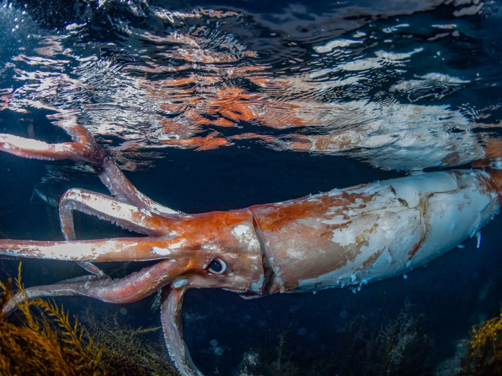
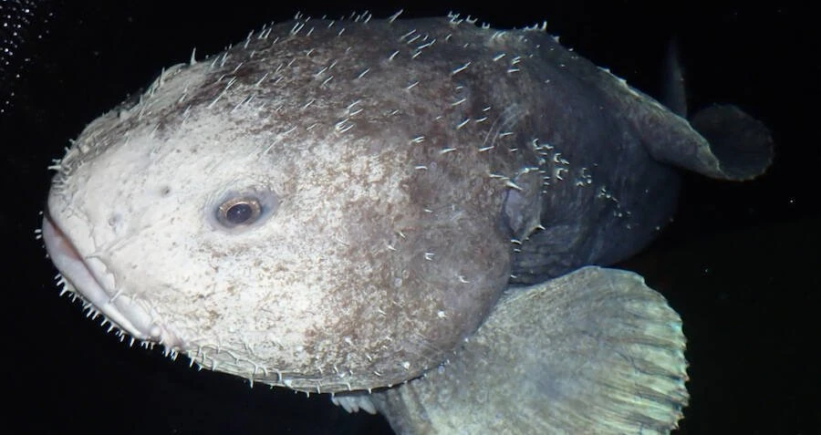
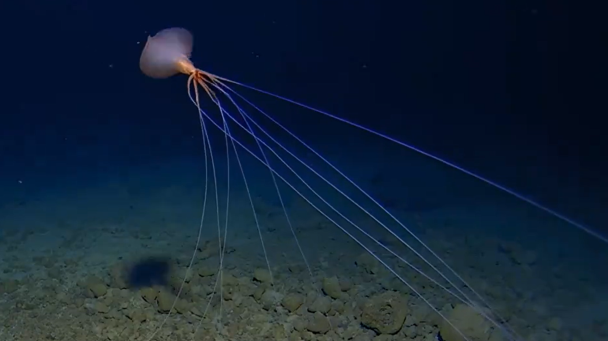

back to menu
back to menu
Mythical Creatures were all looesly based off real life versions of deep sea creatrues
The Blobfish would be one of many deep sea creatures that we would get wrong!
Gigantism Theory - Bergmann's Rule?, Resisting Preassures? , Kliebers Law?.... We still have no idea!
